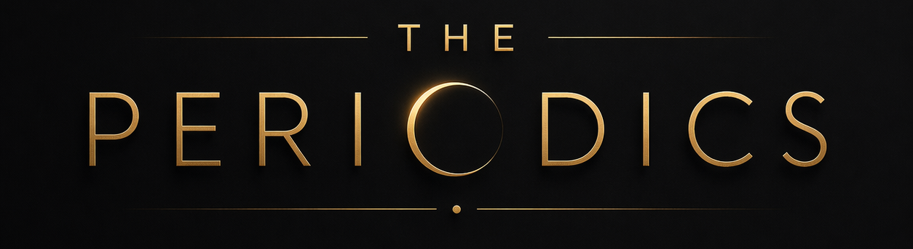
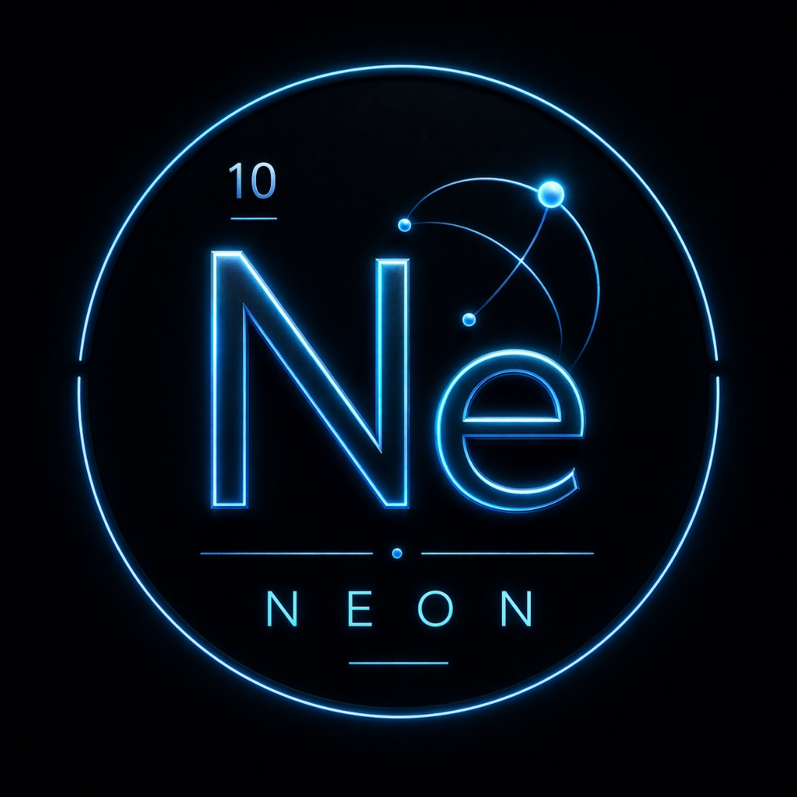

A Multi-Instance Learning approach using topology-aware feature engineering and ultra-regularized LightGBM ensembles to overcome bag-level overfitting.
Combining elemental strengths to build stable, highly-generalizable predictive models.

Given individual-level member data, we must predict a single economic status label for the entire household (the "bag"). Each household contains 3–7 members of varying ages, incomes, and occupations.
Standard ML naively averages features across members. This destroys the economic structure and forces the model to memorize dominant-class patterns.
Simple aggregation models scored highly on local CV. However, they crashed significantly on validation sets because they memorized household IDs instead of learning actual economic patterns.
This massive overfitting gap required a fundamental rethink of how we represent households to the model.
The target variable is severely skewed towards lower and middle economic tiers. The highest economic tier represents a critical minority class.
Implication: Accuracy is a deceptive metric. We optimize strictly for Macro F1.
Treating the household as an interconnected ecosystem, not just a sum of its parts.
Economic status is not determined by the average income or average age of a household. It is determined by the
interactions between its members.
A household with one high-earning capital investor and three unemployed dependents has a vastly different
economic reality than a household with four minimum-wage workers, even if their "averages" look identical to a
naive model.
Capturing who is in the household and how diverse their roles are.
Calculates the diversity of occupations within a single bag. High entropy implies multiple distinct income streams, correlating with stability.
edu_tier_Higher_pct measures the density of highly educated members, a stronger signal than simply checking if any member is educated.
Ratio of non-working members (children/elderly) to active earners. A direct multiplier on economic strain.
Mathematical cross-features that expose hidden wealth indicators.
Models the compound effect of education multiplied by working hours. High-education combined with high-hours acts as a strong indicator for upper-middle-class professional households.
Identifies households earning from both passive capital investments and active labor simultaneously — the defining signature of the highest economic tier.
High Importance IndicatorTopology-aware cross features consistently dominate the LightGBM decision trees over raw aggregations.
Used basic mean/std aggregations for numerical features and mode for categoricals. Provided a starting point but failed to capture structural household complexities.
Applied our topology-aware feature set to a standard LightGBM. The local CV score skyrocketed. However, without extreme regularization, the tree structures were deep enough to memorize unique household fingerprints rather than generalizable rules.
We sacrificed raw local accuracy to enforce generalizability. By applying strict regularization limits, we physically restricted the model from isolating individual households.
lambda_l1=2.0 | lambda_l2=2.0 | min_data_in_leaf=100
Visualizing the Train vs Validation Gap across iterations.